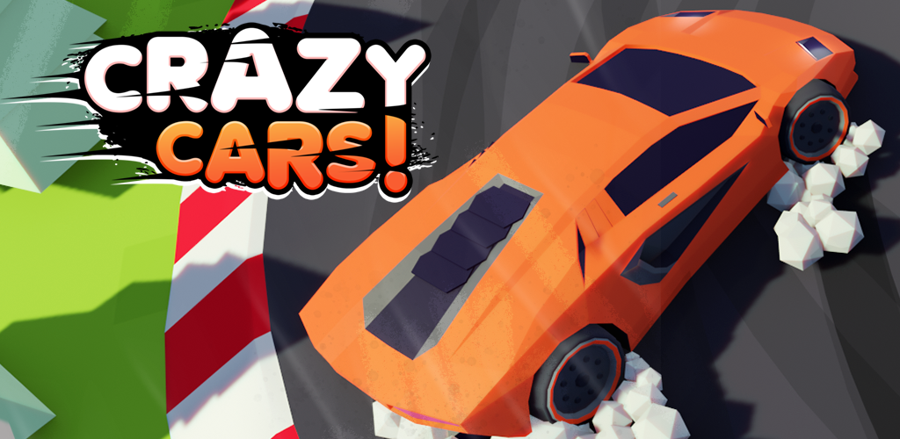

Crazy Cars!
Crazy Cars is a colorful open world sandbox racing game!
Collect stars, wrenches or compete in races to purchase new and exciting cars!Take any car to your destination and start exploring, stunting or racing.
At my time at NoPressureStudios, I had the chance to work on Crazy Cars. This is an awesome car game where I did most of the programming. It was great working together with my superior at the time, and I had an awesome drive for creating more content and working hard on the project.
Working on the game, I've learned a lot.
- Data handling
- Working with instances
- Creation of reusable code
- Debugging and troubleshooting complex programming problems
- Optimizing the game's performance to run smoothly on a variety of hardware configurations
- Programming in javascript
Play